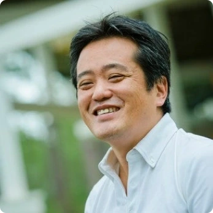

President

Takeshi Izuka
Fortunately for those born wealthy, you can attain a good or higher education and become wealthier. However, for Japanese and Cambodians, it is very difficult to enter elite institutions like Stanford and MIT. I want everyone to have the opportunity to become a world leader regardless of their family's socioeconomic status or ability to speak English.